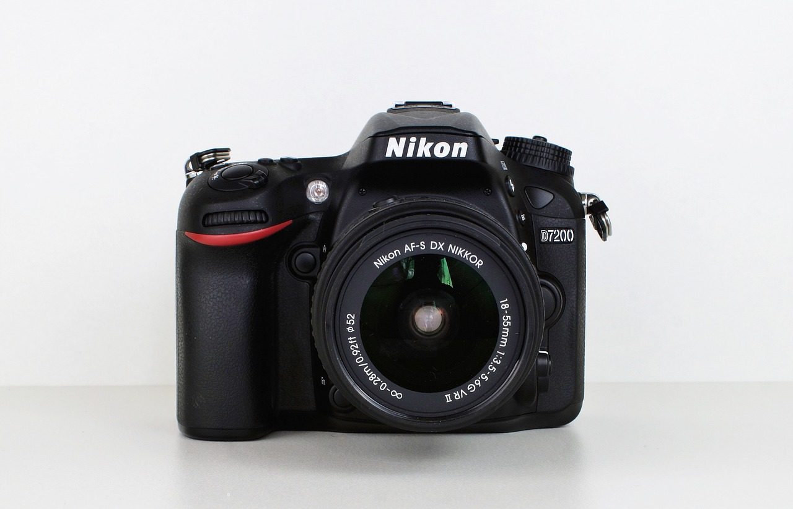
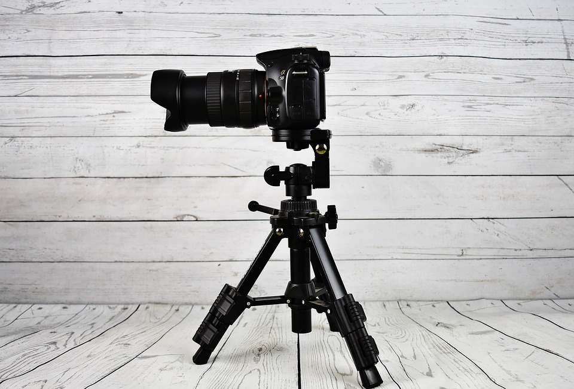
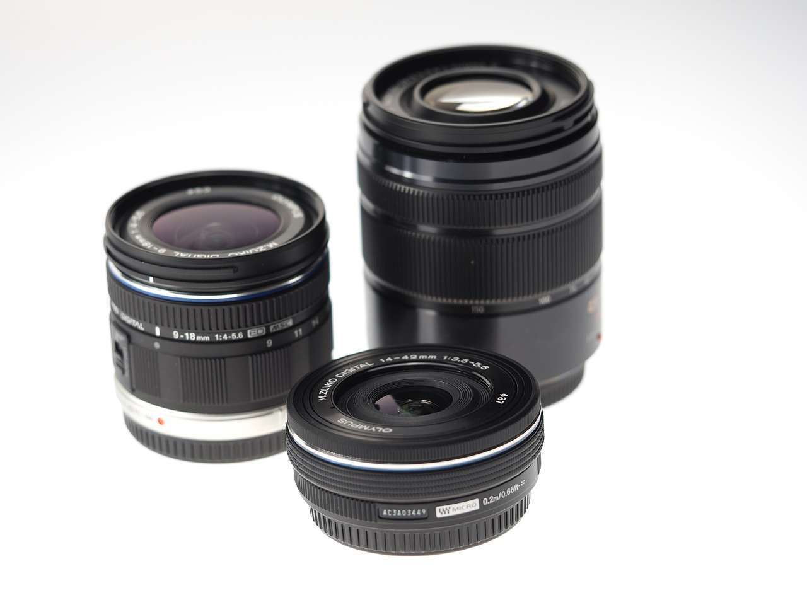

Lo mejor de nosotros
Camara Nikon
La D7200 es toda perfección. El autofoco líder en su categoría, heredado de las legendarias cámaras profesionales de Nikon, garantiza una adquisición precisa del sujeto de hasta -3 EV. Un menú específico para configuraciones de vídeo y opciones avanzadas, a fin de que el control de audio proporcione mayor flexibilidad a los usuarios que graban vídeo. Las funciones para la fotografía con estelas de luz y los vídeos a intervalos fluidos amplían las opciones creativas, y los objetivos NIKKOR garantizan una gran riqueza de detalles. La conexión Wi-Fi integrada y la compatibilidad con NFC facilitan la carga de impresionantes imágenes estáticas.
Nueva sony a7 III
Tal y como os contamos cuando se anunció la Sony A7 III, los ejecutivos de la firma la presentaron como el “modelo básico”. Claro que viendo la lista de especificaciones y el precio, y teniendo la oportunidad de tener una primera toma de contacto con ella, ya nos quedó claro que no se referían precisamente a que hubieran fabricado algo “sencillo” o “accesible”.
Imnovadores objetivos
Uno de los usos más cotidianos de una cámara de fotos es la realización de retratos. Fotos de nuestros seres queridos para tenerlos siempre inmortalizados. Podemos usar cualquiera, pero, para conseguir los mejores resultados posibles, es conveniente que busquemos un objetivo con distancia focal fija o con una variación muy pequeña.